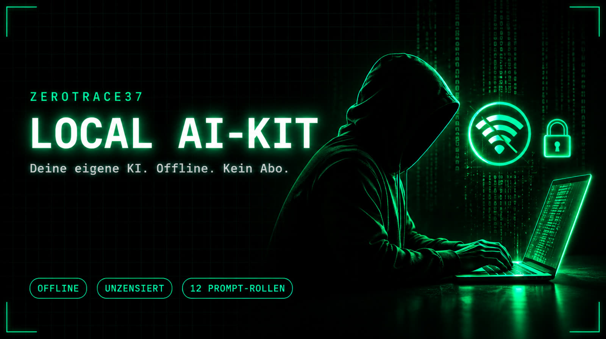

ZeroTrace37 · Digitales Produkt
Deine eigene KI. Offline. Kein Abo.
Das Local AI-Kit richtet dir in Minuten ein vollständiges KI-System auf dem eigenen Rechner ein: Sprachmodell, Chat-Oberfläche und eine Bibliothek aus zwölf fertigen Rollen. Keine Cloud, keine Rate-Limits, keine Datenweitergabe.

Was du bekommst
Ein lauffähiges System, kein Bastelsatz.
Sprachmodell, Oberfläche und Automatik greifen ineinander. Ein Skript erkennt deine Hardware und lädt das passende Modell, du musst nur einmal den Start anstoßen.
Alles auf deinem Rechner
Ollama und Open WebUI laufen in zwei Docker-Containern. Nach der Einrichtung ohne Internet, kein Paket verlässt dein Netzwerk.
Setup erkennt dein RAM
Ein Befehl, und das Kit wählt zwischen vier Profilen von 2B bis 27B das passende Qwen-Modell und startet alles selbst.
Modell ohne Hersteller-Filter
Standard ist ein abliterated Community-Modell ohne eingebaute Ablehnung. Das Original mit Sicherheitsfiltern ist per Option wählbar.
12 fertige Prompt-Rollen
Für Pentest, Bug Bounty, Code-Review, OSINT, Incident Response, Texte und mehr. In einer Minute pro Rolle eingerichtet.
Login, lokale Bindung, Backup
Dienste nur auf 127.0.0.1, Login eingeschaltet, Konto und Chats in Docker-Volumes. Mitgeliefertes Skript sichert sie lokal.
Ehrliches Dossier statt Magie
Die Anleitung erklärt Architektur, Betrieb, wie ein Modell wirklich lernt (Pretraining, Fine-Tuning, RAG) und gelöste Praxisfälle.
So läuft es
In vier Schritten zur eigenen KI.
- Docker & WSL2 vorbereitenUnter Windows WSL2 mit Ubuntu und Docker Desktop, unter Linux und macOS direkt Docker. Alles in der Anleitung Schritt für Schritt.
- Setup startenEinmal
./setup.shausführen. Das Kit erkennt dein RAM, lädt Modell und Oberfläche und startet beides. - Browser öffnenUnter
localhost:3000ein lokales Konto anlegen. Das erste Konto ist Admin, es bleibt auf deinem Rechner. - Rolle wählen, loslegenEine der zwölf Prompt-Rollen einrichten und im Chat auswählen. Ab hier läuft alles ohne Internet.
Ersteinrichtung je nach Internet und Hardware rund 45 bis 90 Minuten, danach startest du das Kit täglich mit einem einzigen Befehl.
Prompt-Bibliothek
Zwölf Rollen, sofort einsatzbereit.
Jede Rolle ist ein sorgfältig geschriebener System-Prompt mit festem Ausgabeformat, empfohlener Temperatur und Beispiel-Eingaben, gebaut für kleine lokale Modelle und mit der klaren Anweisung, nichts zu erfinden.
| Nr. | Rolle | Wofür |
|---|---|---|
| 01 | Pentest-Assistent | Planung und Vorgehen bei autorisierten Tests, mit Scope-Abfrage |
| 02 | Bug-Bounty-Jäger | Recon-Plan, Hypothesen, Priorisierung, Berichtshilfe, immer innerhalb der Programmregeln |
| 03 | Schwachstellenbericht | Stichpunkte werden zum sauberen Kunden- oder Bounty-Bericht |
| 04 | Code-Security-Review | Quellcode auf Sicherheitsprobleme prüfen, mit konkreten Korrekturen |
| 05 | OSINT-Analyst | Öffentliche Informationen über Organisationen auswerten |
| 06 | Incident-Response | Einordnen, Eindämmen, Beweise sichern, Logzeilen erklären |
| 07 | Coding-Partner | Schreiben, Debuggen und Refaktorieren in mehreren Sprachen |
| 08 | Linux-/Docker-Helfer | Befehle, Skripte und Fehlersuche, mit Warnung vor riskanten Befehlen |
| 09 | SEO- und Webtexter | Seitentexte, Meta-Daten und FAQ-Blöcke für lokale Unternehmen |
| 10 | Angebot & Kundenmail | Angebote, Erinnerungen und Absagen professionell formuliert |
| 11 | Übersetzer & Lektor | Deutsch und Englisch, Stil, Grammatik und Klarheit |
| 12 | Zusammenfasser | Protokolle, Berichte und lange Texte strukturiert kürzen |
Voraussetzungen
Was dein Rechner mitbringen sollte
- Windows 10/11 mit WSL2, oder Linux bzw. macOS
- Docker Desktop
- Ab 6 GB RAM, empfohlen 8 bis 16 GB
- 12 bis 40 GB freier Speicher, je nach Modell
- Internet nur für die Ersteinrichtung
Im Paket
Das liegt in der ZIP
- docker-compose.yml mit getesteten Versionen
- setup.sh mit automatischer Hardware-Erkennung
- backup.sh für lokale Sicherungen
- 12 Prompt-Rollen als Markdown-Dateien
- Ausführliches Dossier als HTML-Anleitung
Ehrlich gesagt
Verantwortung inklusive.
Die unzensierte Modellvariante läuft ohne Hersteller-Absicherung komplett lokal, die Verantwortung für die Nutzung liegt bei dir. Die Sicherheits-Rollen sind für autorisierte Tests, eigene Systeme und Bug-Bounty-Programme gedacht und fragen deshalb nach Scope und Freigabe.
Das Kit verspricht keine Magie. Lokale Modelle erfinden gelegentlich Befehle oder Parameter. Die Anleitung erklärt, wie du das erkennst, wie ein Modell wirklich lernt und wie du über ein Gedächtnis per RAG oder ein eigenes Fine-Tuning weitergehst.
Häufige Fragen
Was Käufer wissen wollen.
Läuft die KI wirklich komplett offline?
Internet brauchst du nur einmal für die Einrichtung: Docker-Images, Modell und ein kleines Suchmodell werden geladen. Danach läuft alles ohne Internetverbindung auf deinem Rechner. Kein Paket verlässt dein Netzwerk, außer du aktivierst bewusst eine Websuche.
Welche Hardware brauche ich?
Mindestens 6 GB RAM, empfohlen 8 bis 16 GB. Das Setup erkennt dein RAM automatisch und wählt dazu ein passendes Modell: Qwen3.5 in 2B, 4B oder 9B, ab 28 GB RAM das große Qwen3.8 27B. Dazu rund 12 bis 40 GB freier Speicher, je nach Modellgröße.
Was bedeutet die unzensierte Variante?
Standardmäßig lädt das Kit ein Community-Modell ohne eingebaute Anfrage-Ablehnung (abliterated). Es läuft komplett lokal, ohne Hersteller-Absicherung, die Verantwortung liegt bei dir. Per Option bekommst du stattdessen oder zusätzlich das Original-Modell mit Sicherheitsfiltern.
Zahle ich ein Abo?
Nein. Das Kit ist ein einmaliger Kauf für 29,99 €. Es gibt keine laufenden Kosten, keine Rate-Limits und keine Cloud, weil das Modell auf deiner eigenen Hardware läuft.
Bleiben meine Chats privat?
Ja. Konto, Chats und Einstellungen liegen in Docker-Volumes auf deinem Datenträger, die Dienste sind standardmäßig nur von deinem eigenen Rechner erreichbar. Ein mitgeliefertes Backup-Skript sichert deine Daten lokal, das Backup enthält die Chats im Klartext und gehört auf einen verschlüsselten Datenträger.
Brauche ich tiefe Technikkenntnisse?
Du solltest ein Terminal öffnen und einen Befehl eintippen können. Die Anleitung führt dich Schritt für Schritt durch WSL2, Docker und den Start, inklusive Lösungen für die häufigsten Stolpersteine aus der Praxis.
Jetzt starten
Deine eigene KI, einmal kaufen, für immer nutzen.
Einmalig 29,99 € auf Gumroad. Du lädst die ZIP herunter und folgst der Anleitung.